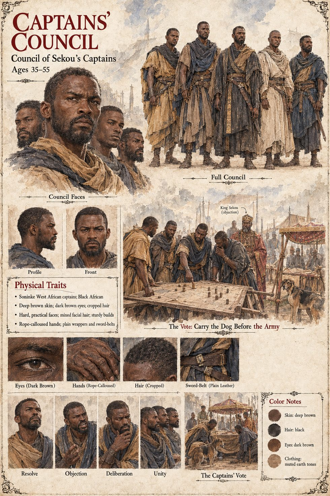

Captains' Council
Council of Sekou's captains · votes over the king's objection · 35 to 55 on their sheet
In the third winter of the war the captains' council votes, over the king's objection, to carry the dog before the army in the spring: a litter, a canopy of indigo, a guard of fifty, so that the Long Debt might lead the host and the enemy might see it. The idea was reached in the east from the other direction, where a party of Awa's riders has already tried once to take the dog. The council counts, in the manuscript's words, only what it could march, which is why Bocar the granary-keeper, who dies on his bench beside an empty bin, is not one of the dead it counts.
Fode hears of the vote on the fifth day of Mavren, in the council court, from a scribe, says nothing, goes home and recites the kings backward twice without reaching the bargain. It is the last link in the reasoning that sends him ten days later to the grey stone: the captains mean to carry the dog into the field in a litter of indigo and it will be killed by soldiers or kept. The manuscript does not name or number the captains, say who votes which way, or say whether Mory sits among them; after the dog's death Sekou's captains say that the east did it.
The sheet's ages of 35 to 55, deep brown skin, dark brown eyes, cropped hair, hard practical faces, mixed facial hair, sturdy builds, rope-calloused hands and plain wrappers and sword-belts are its own, as are its panels Resolve, Objection, Deliberation and Unity and its scenes The Vote: Carry the Dog Before the Army and The Captains' Vote. It labels the king King Sekou (objection) and draws a dog beside the council table, though the manuscript does not place the dog at the vote.
“voted to carry the dog before the army in the spring”